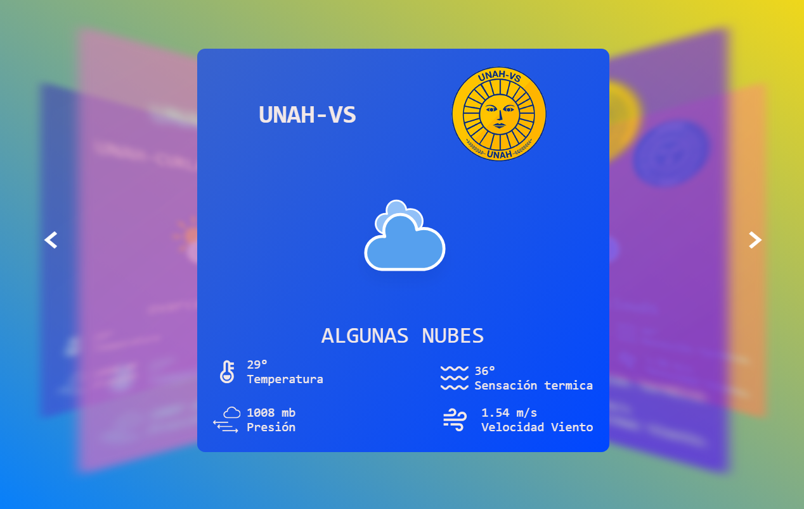

Clima UNAH
Mi proyecto es una página web que ofrece información en tiempo real sobre el clima en los distintos campus de la Universidad Nacional Autónoma de Honduras (UNAH). Los usuarios pueden ver fácilmente distintas condiciones climáticas relevantes. Diseñado para estudiantes, profesores y personal administrativo que viajan largas distancias, el objetivo es mejorar su planificación y experiencia de viaje.
 HTML
HTML
 CSS
CSS
 Git
Git
 GitHub
GitHub